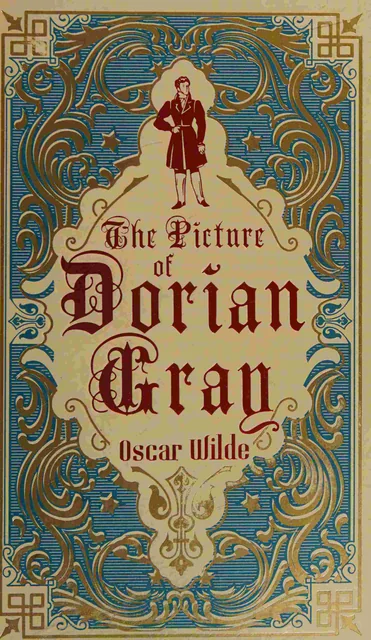
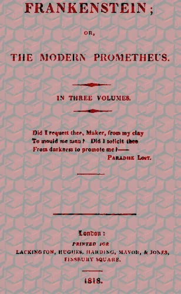
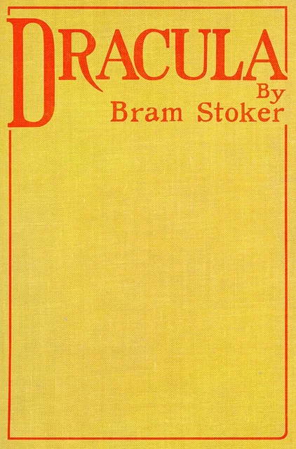
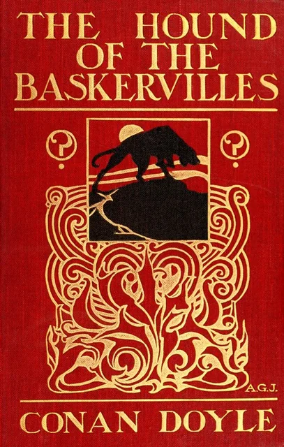
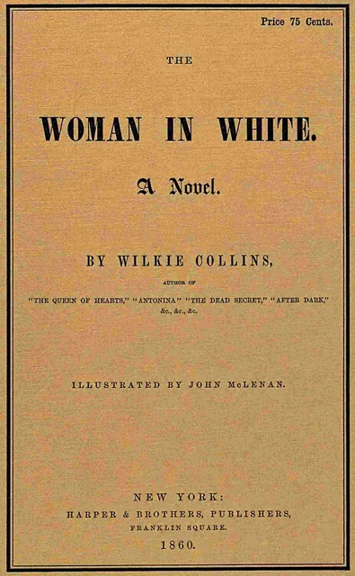
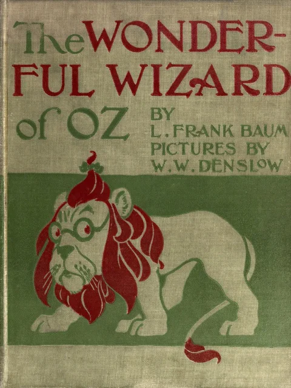
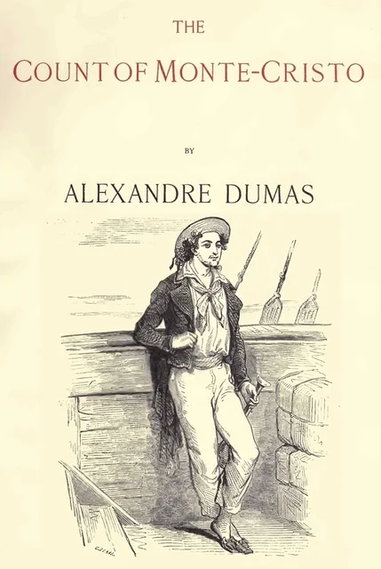
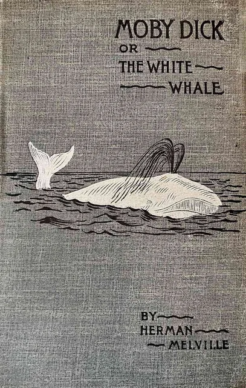
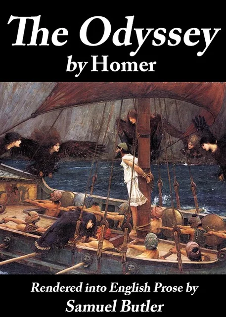

The catalog
Choose a book
Showing all 61 books








Fiction
Gulliver's Travels into Several Remote Nations of the World

Politics and Society
An Inquiry into the Nature and Causes of the Wealth of Nations
Politics and Society
Walden, and On the Duty of Civil Disobedience
Science, Nature, and Mathematics
The Descent of Man, and Selection in Relation to Sex
Science, Nature, and Mathematics
Relativity: The Special and General Theory
History and Memoir
Narrative of the Life of Frederick Douglass, an American Slave
History and Memoir
Incidents in the Life of a Slave Girl, Written by Herself
History and Memoir
The Interesting Narrative of the Life of Olaudah Equiano
No books match that search.